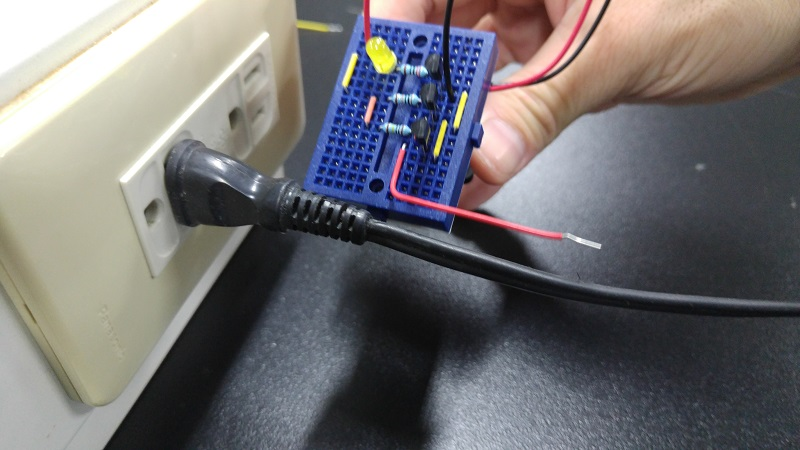
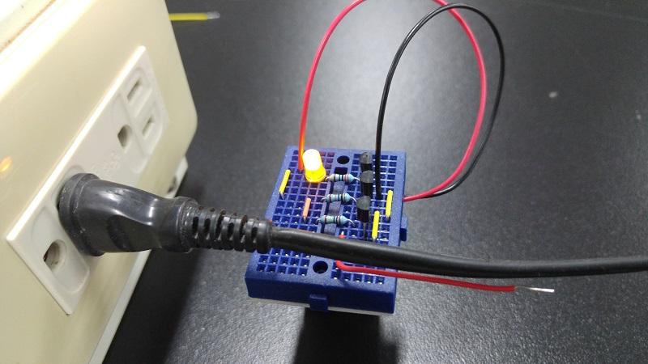
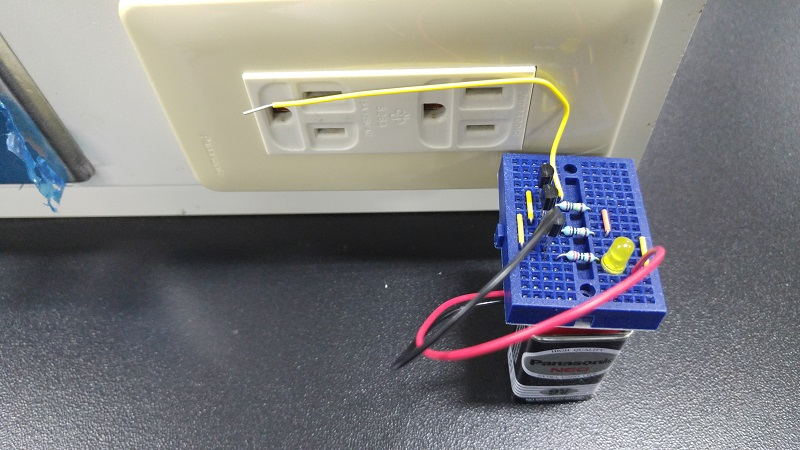
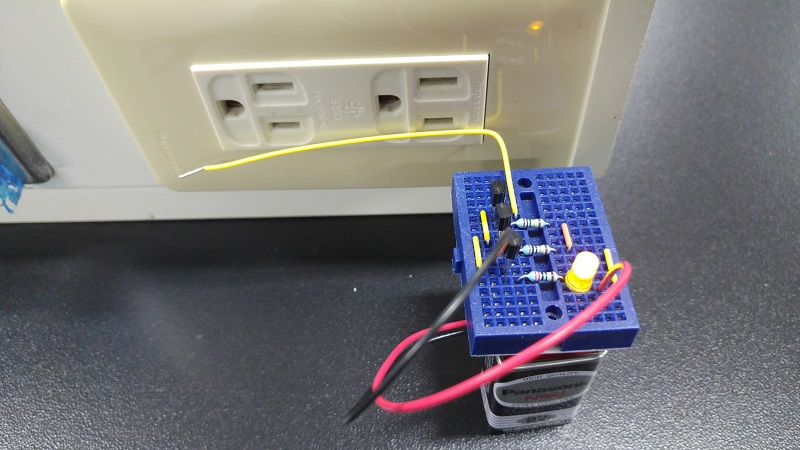
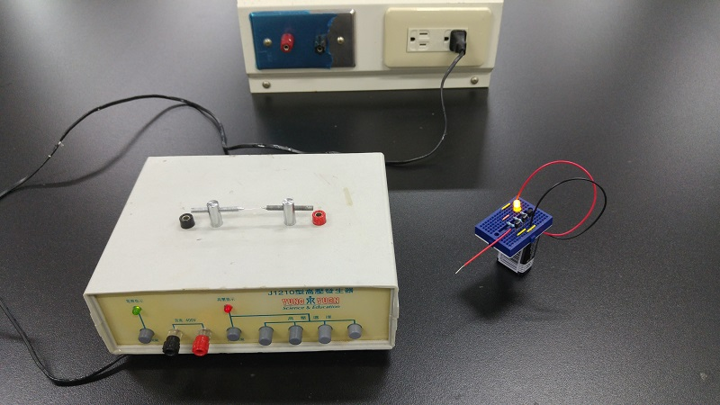
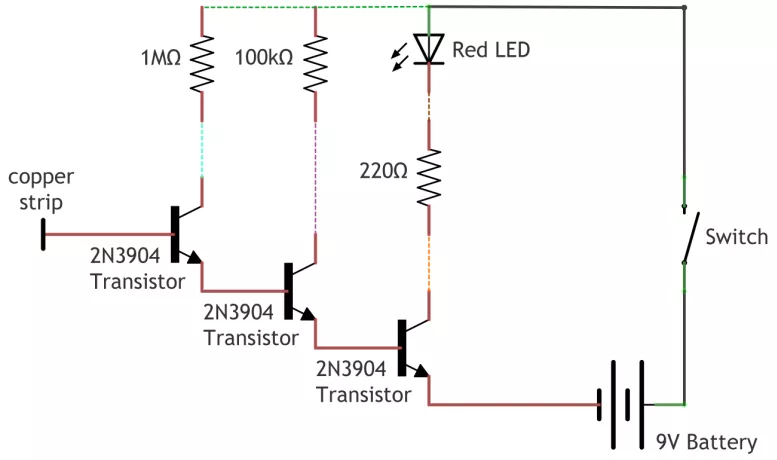
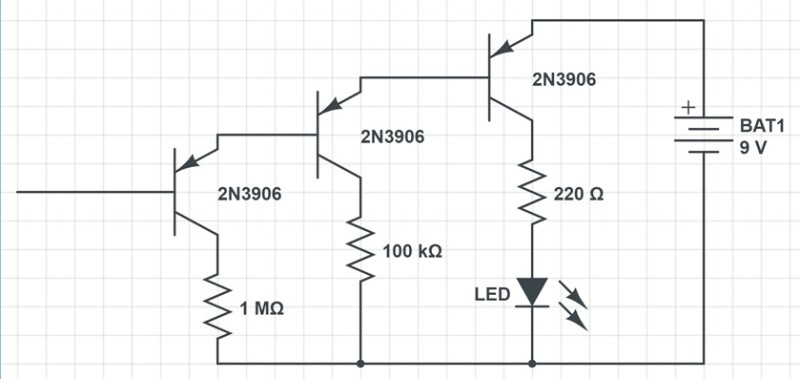
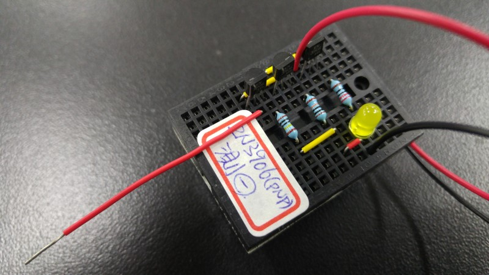

↑火線探測器
↑靠近插座連出來的電線一側，LED不發亮，是中性線。
↑靠近插座連出來的電線另一側，LED發亮，是火線(活線)。
↑也可以直接探測插座，較寬的應該要是中性線。
↑插座較窄的應該要是火線，比較不靈敏，所以天線用長一點。
↑放在高壓電源旁邊，因為電壓很高，距離遠遠的LED就亮了。
↑電路圖，圖片來源 http://makezine.com/projects/non-contact-voltage-detector/
火線探測的原理是利用空間中電場變化造成的微小電流，當電流流「入」天線時，電晶體導通而使LED發亮。
如果把上述的2N3904(npn)電晶體換成2N3906(pnp)，就會變成電流流「出」天線時，電晶體導通而使LED發亮。
↑可以區分正電與負電的火線探測器。
↑電路圖。
↑長得跟正的很像。